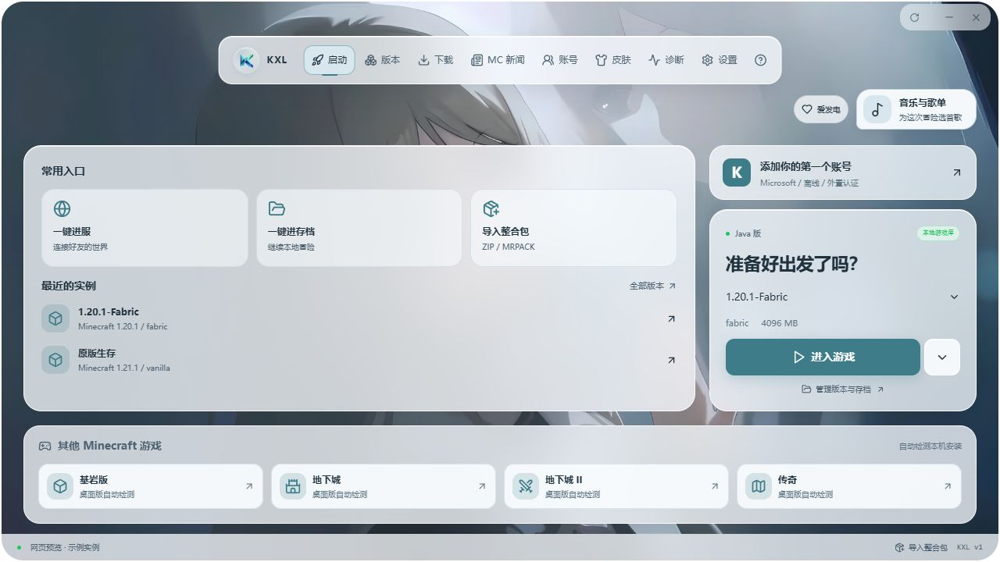

为 Windows 打造Windows 便携版
把复杂留给启动器，把方块世界留给你。
游戏版本、模组与整合包，都在一个清爽的窗口里。
Kynex Launcher，让每一次出发更简单。
免费使用 · Windows 便携版 · 按自己的节奏游玩
正式版与预览版均可在下载页面获取。

Kynex Launcher · 首页
按你的节奏，了解 Kynex。
从它能做什么，到如何开始游玩。
游戏版本、模组与整合包，都在一个清爽的窗口里。
Kynex Launcher，让每一次出发更简单。
免费使用 · Windows 便携版 · 按自己的节奏游玩

Kynex Launcher · 首页
从它能做什么，到如何开始游玩。